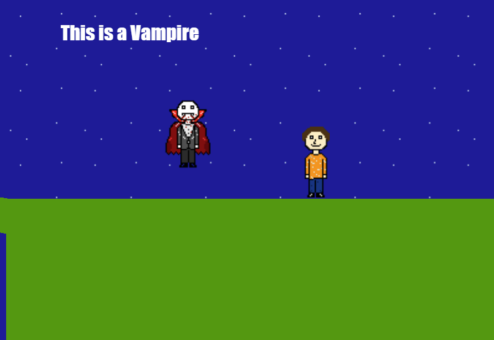
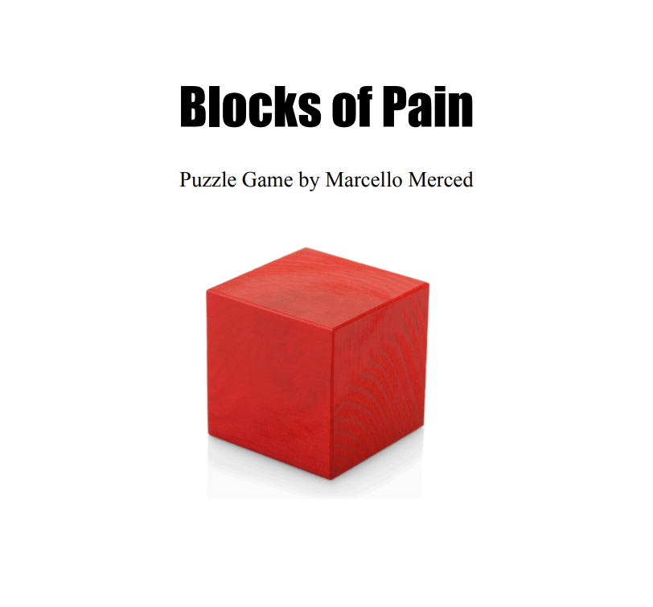

I created all of the music and SFX for this game, along with writing the entire script for it as well. We had 6 months to create this game with a team of three people. Originally, I was put on the team to just create music and SFX, but midway through production the team asked me to write the script because I was the only one on the team that had experience with writing stories at this length. This was a very hard challenge for me because I only had two months to write the script and faced many obstacles along the way. Many of the things that I wanted to add had to be cut due to time constraints, but I am still very proud of what I was able to accomplish in the time I had.
I created all of the music and SFX for this game. Our team of five had six months to create this game, and it just so happened to be our first try at making a 3D game. Each level is based on a different emotion so I had to make sure that each level’s songs I created fit in with the theming of the level.
This was the very first game that I ever created. It’s a simple platformer with only 1 level and VERY unpolished. I made everything by myself and it took me about a month to finish. Going into this project I had no prior experience with coding, art, music, or SFX so this was all very new to me. I feel I’ve definitely come a long way.

A simple puzzle game about moving blocks where they are supposed to go
